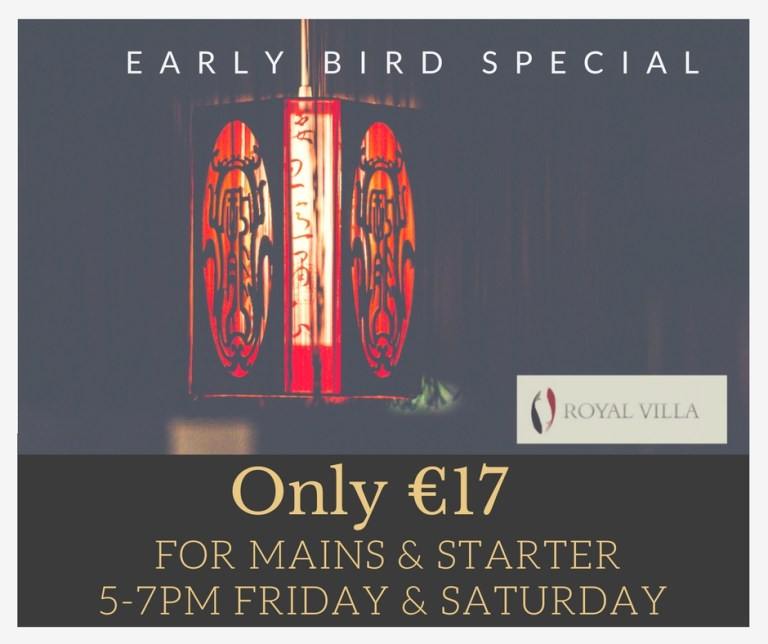

This weekend in Galway’s favourite Chinese restaurant 😉 We’re serving our great value Early Bird menu. 2 courses for just €17
Available from 5-7pm on Fridays and Saturdays and 3-6pm on Sundays
If you want to treat yourself to your favourite Chinese Food then be sure to book as it’s a very popular time.
You can also have all our favourite Chinese food at the restaurant on our Midweek Special Menu available all night Tuesday to Thursday – no time limits, only €15!!
Closed Mondays for October and November except Bank Holiday Monday October 30th
Now open 6 days a week so call in any day except Monday for your favourite Chinese!
We’re very excited to be involved with The Village Salthill group. Be sure to check out their latest initiative, Ealu every Tuesday night at 7pm. A free walk and inspiring talk for everyone to give you a boost for the week!
Keep an eye on our Facebook and on www.salthill.com for more information. We are now open 7 days a week once again serving your favourite Chinese food. Whether you’re looking for dine-in, takeaway or home delivery we have all your needs covered. So get in touch with us now.
We can cater for groups of up to 30 people with your own section so why not call us for your big family gathering or post Christmas meetup, a staff party or a corporate event.
We can cater for groups of up to 30 people with your own section so why not call us for your big family gathering or post Christmas meetup, a staff party or a corporate event.
We have a great range of options that will suit all tastes as well as some unique specials menus. If you’d like more details and some photos of a sample then have a look at the menu here!
Don’t forget that we have something to suit your needs anytime you’re in! Are you a Coeliac or on a Gluten Free diet? Read how we can cater for your needs here
Got a group? Talk to Jeff for bookings up to 30 people for your own private area
Like us on Facebook, Follow us on Instagram, Talk to us on Twitter